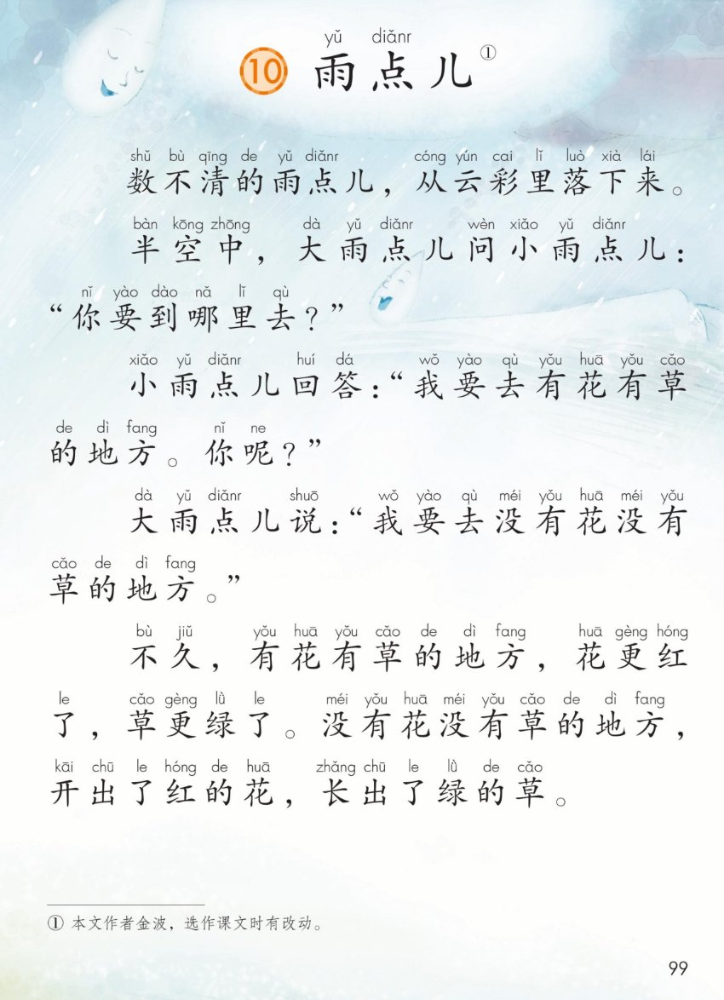
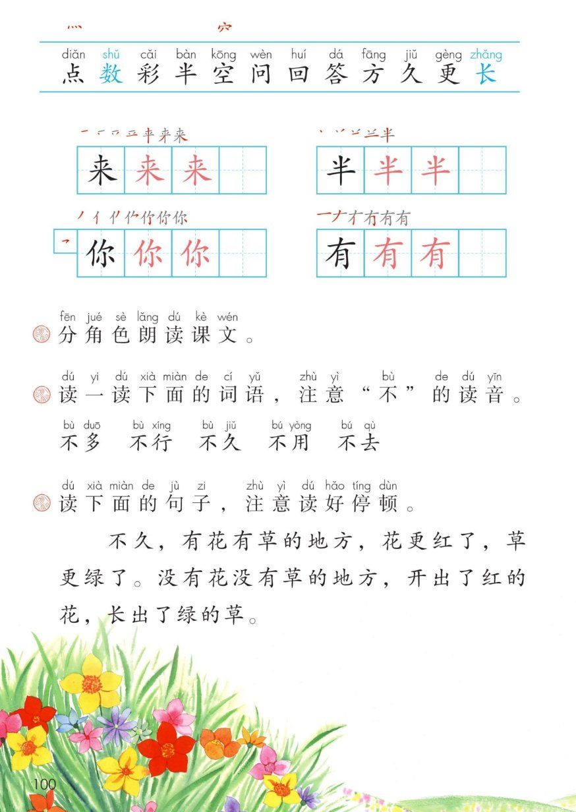

×
🔊 手机听不到声音怎么办？
① 先把手机
媒体音量调大 ，确认没开静音、没连蓝牙耳机；在微信里打开的，点右上角「⋯ → 用浏览器打开」。
② 还是没声音？到应用商店免费下载
Microsoft Edge 浏览器 （它自带朗读发声），用它打开本页面就能出声。
③ 换了 Edge 仍然没声音，说明这部手机的
硬件/系统不支持 网页朗读（多为老旧机型）；近几年买的新手机一般都能正常播放。
→ 打开声音自检
统编版 · 一年级上册 · 第八单元 · 阅读 · 课文10
⑩ 雨 点 儿
数不清的雨点儿，从云彩里落下来……
5 个自然段 分角色朗读 「不」的变调 读好停顿 闯关 8 题
这一课学什么： 把 5 个自然段 读顺，和同学分角色 读好大雨点儿、小雨点儿的对话；
认识 12 个字，写好「来、半、你、有」；读准「不 」在不同词语里的两种声调，
学会按逗号句号读好停顿 。🌧️🌸🌱
页面上的拼音是照课本标的，供参考，以课本和老师为准。
课本第 99 页 点一段读一段
读前小贴士： 课文一共 5 个自然段 ：
①雨点儿落下来 → ②大雨点儿发问 → ③小雨点儿回答并反问 → ④大雨点儿作答 → ⑤两个地方变了样。
前面 4 段是故事和对话 ，最后 1 段写雨水带来的变化 。📖
🎵 全文连读
🔁 跟读模式（读完一段停一停）
🔎 读准这几个词： 「数不清 」的「数」在这里读第三声 ，是一个一个数的意思；
「雨点儿 」的「儿」读得又轻又短，紧跟在「点」后面；
「云彩」「地方」课本注的是轻声，读轻一点更像说话。🗣️
课本第 100 页 点一句读一句
课后题① 分角色朗读课文。 🎭 请三位同学合作：
旁白 （灰蓝）讲事情和变化 · 大雨点儿 （蓝）声音响一点 · 小雨点儿 （绿）声音轻一点。
先看行前标签，引号里的 才是角色说的话；「你要到哪里去？ 」读出问的语气，
「你呢？ 」读出反问的语气。
🎭 三人合作连起来读
🔵 只读大雨点儿
🟢 只读小雨点儿
💡 小诀窍： 旁白读得清楚平稳，把故事连起来 ；
对话读得像真的在一问一答 。读熟了可以换角色再读一遍，
加上动作演一演。🌟
课本第 100 页识字条 点一张读一张
识字条 · 连起来读
点 数 彩 半 空 问 回 答 方 久 更 长 —— 蓝色的「数 长 」是多音字
课本第 100 页识字条 点卡听读
课本第 100 页田字格 先看笔顺，再动笔
✍️ 写字小提醒： 来 中间一竖压竖中线，撇捺舒展；半 两横上短下长，最后一竖要直；
你 左边单人旁写窄、右边写宽；有 先长横再撇，下面「月」的第一笔是竖 不是撇。
课本上「黑字示范 → 两格红字描红 → 一格自己写 」。
课本第 100 页 点一张读一张
课后题② 读一读下面的词语，注意「不」的读音。 第四声 ；后面跟第四声的字 时，要变读成第二声 。
先看后面那个字是第几声，再决定「不」怎么读。👂
🔊 五个词连起来读
🟠 只读变第二声的两个
🧩 一起记： 不多 · 不行 · 不久 → 第四声；不用 · 不去 → 第二声。
课文第一段「数不清 」的「不」，后面是第一声的「清」，所以读第四声。
「不要、不是、不见」是拓展练习，不是课本词语，可以自己试着判断。
课本第 100 页 点一句读一句
课后题③ 读下面的句子，注意读好停顿。 ｜ 是逗号，停一小下；‖ 是句号，停一大下。
句子里的逗号把「地方 」和「变化 」分开说，停一停才听得清楚。
🔊 整句连读
🐢 分小句慢读
课本第 99 页 点卡听读
🔍 比一比就明白： 有花有草的地方用「更 红了、更 绿了」，是本来就有的变得更好 ；
没有花没有草的地方用「开出了 、长出了 」，是从没有到有 。
同样一场雨，两处都变美了。🌸🌱
💬 想一想，说一说： 如果你也是一颗小雨点儿，你想落到哪里去 ？
学着课文的样子说：「我要去……，让……」。
卡片里的两句是练习示例，不是课文原文，说自己想去的地方就可以。
👤 认识作者： 课本脚注写着「① 本文作者金波，选作课文时有改动」。
把雨点儿写成会说话、会选地方 的小伙伴，读起来像听两个小朋友聊天。📖
点题目可以听题，点选项就判对错，答完自动算分
已经答 0 题，答对 0 题。
点图放大

第 99 页 · 课题 · 课文 5 个自然段 · 拼音 · 脚注

第 100 页 · 识字条 · 田字格 · 三道课后题 · 插图